A one-piece, zip-tie style anti-skid strap with stepped cleats, a one-way ratchet lock and a rounded tail. It threads through the wheel, locks around the tyre and rim, and bites into snow and ice. Sized for the Royal Enfield Hunter 350.
The strap in its installed loop pose, turning through a full rotation.
Drag to rotate, scroll or pinch to zoom. Rendered live from the real STL files.
The orange anti-skid tyre traction cable-tie, in use.
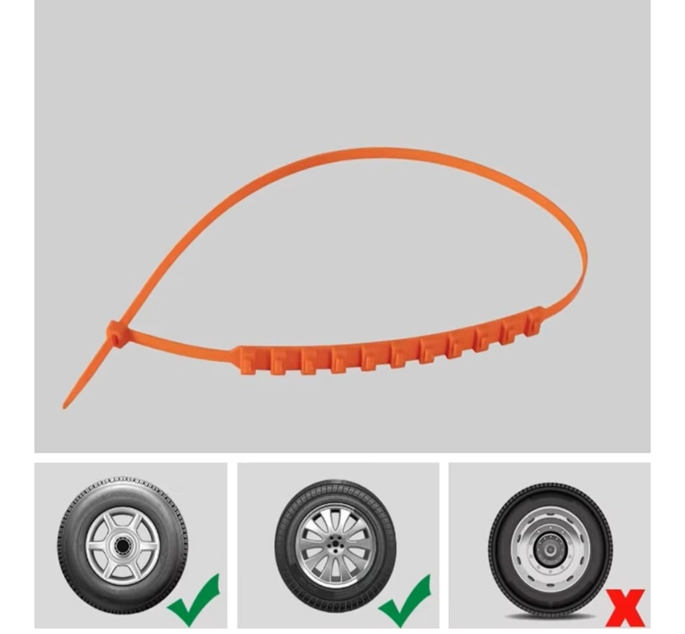
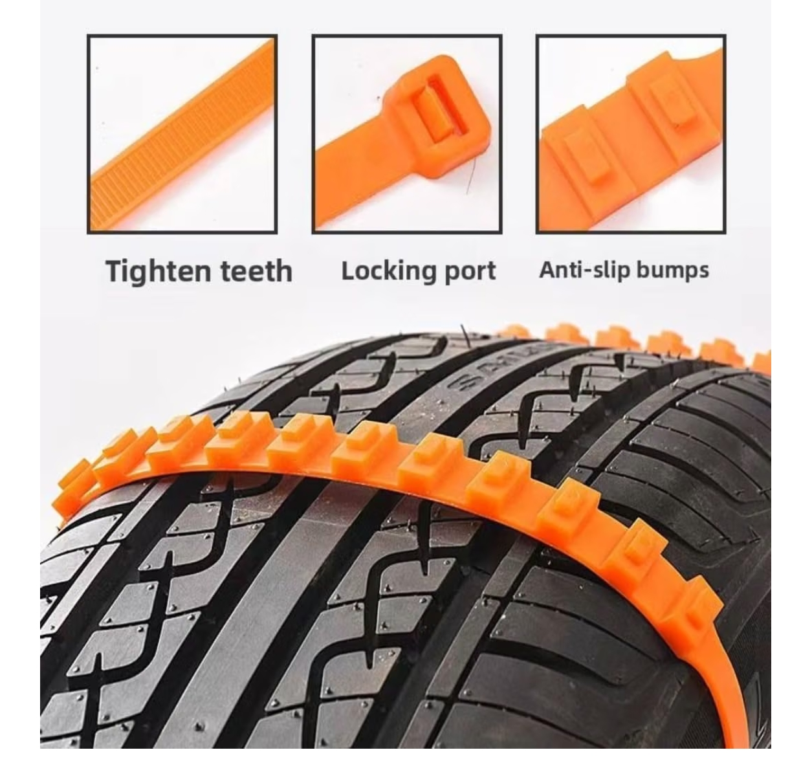
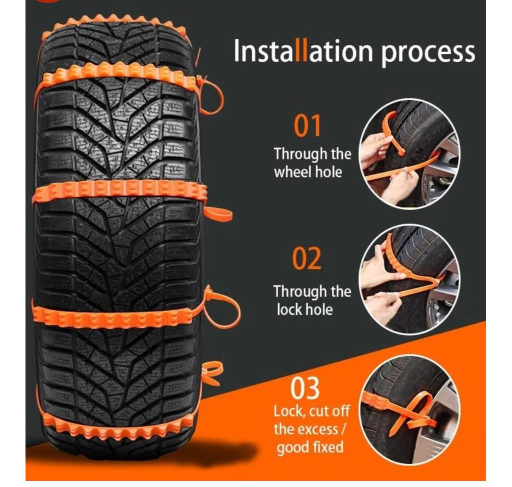
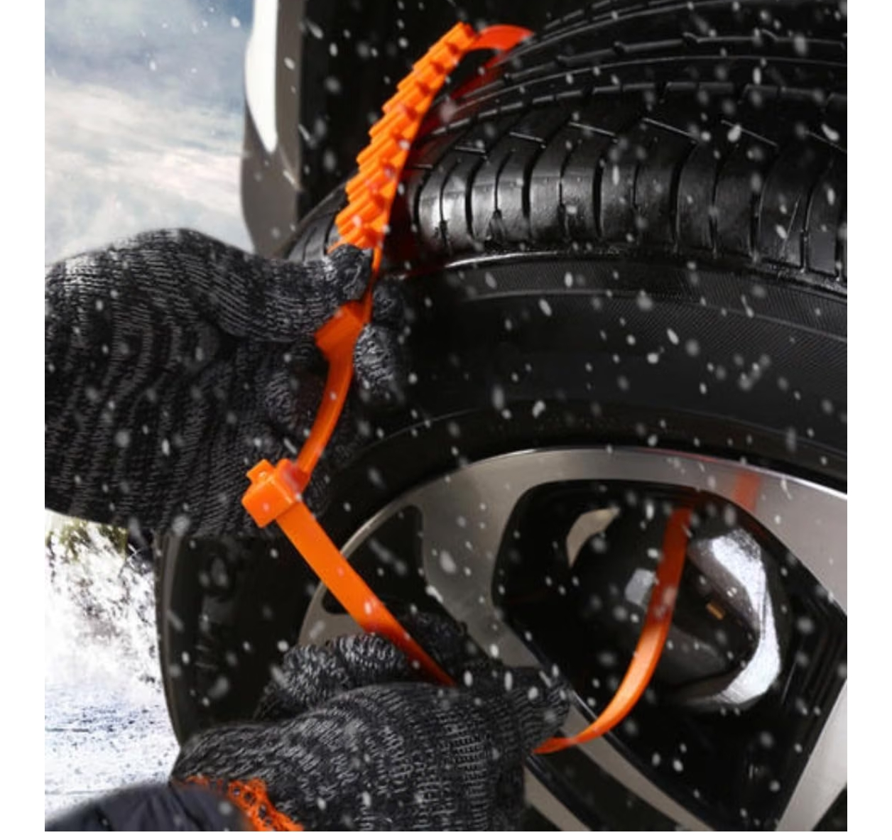
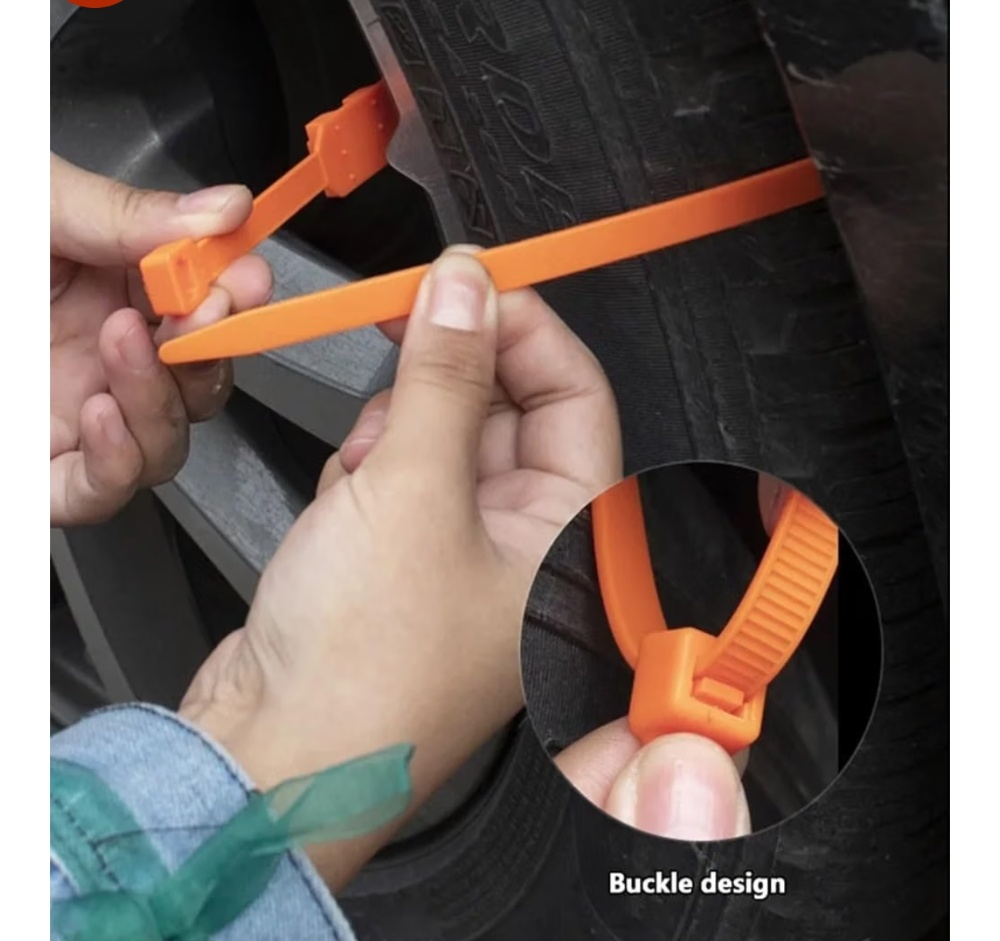
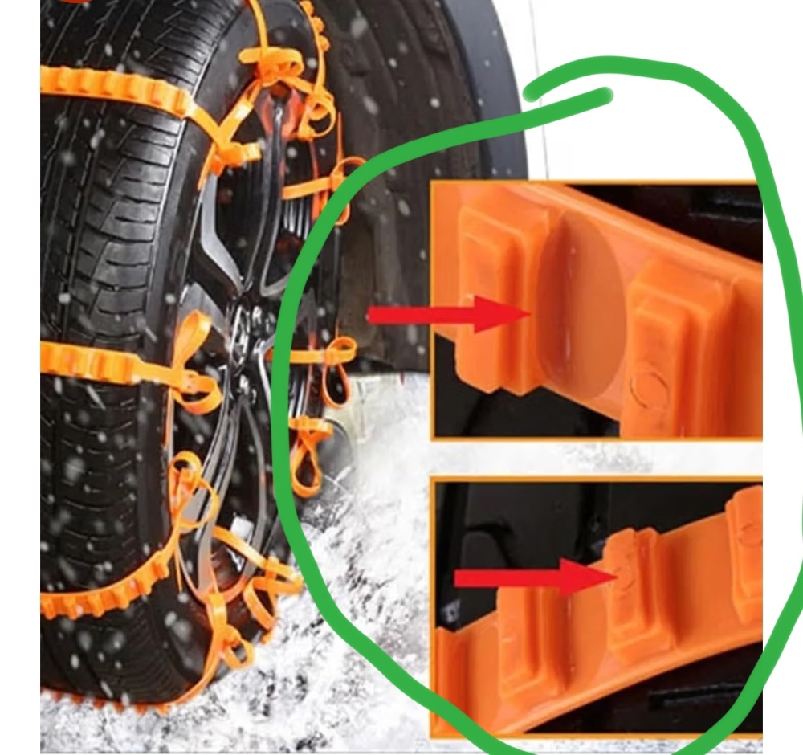
The model is an original design that works the same way, adapted for a motorcycle wheel.
Open-top housing with a floor-rooted, two-tooth pawl. Load pushes the pawl into the teeth, so it locks tighter under tension. 45° lead-in, 90° lock shelf.
Full-width lugs with a lower and an upper step, filleted bases and rounded tops, so they resist shearing on the road.
Shallow ovals between the cleats, on a thin 2.5 mm band that flexes around the tyre.
Raised 4 mm domes (fewer, taller and wider than before) on the underside press into the tread rubber from every direction without cutting it.
Coiled upright on the bed so teeth, pawl and cleats lie in the layer plane, the strongest direction for FDM.
Plate files pack five straps (or six test pieces) onto one 330 × 270 mm bed for Onyx on a Markforged X7.
Smooth transitions from cleat band to strap, and a rounded tail, avoid stress concentrations.
A cut through the head at mid-width, and where the strap sits on each Hunter 350 tyre.
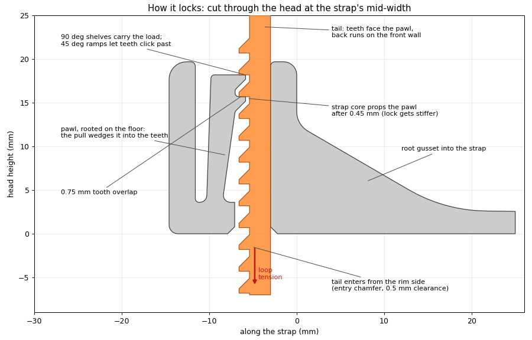
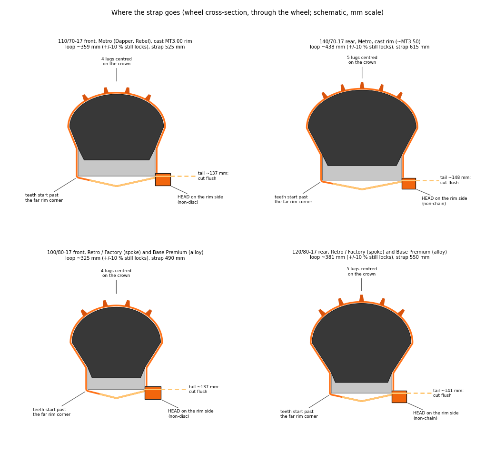
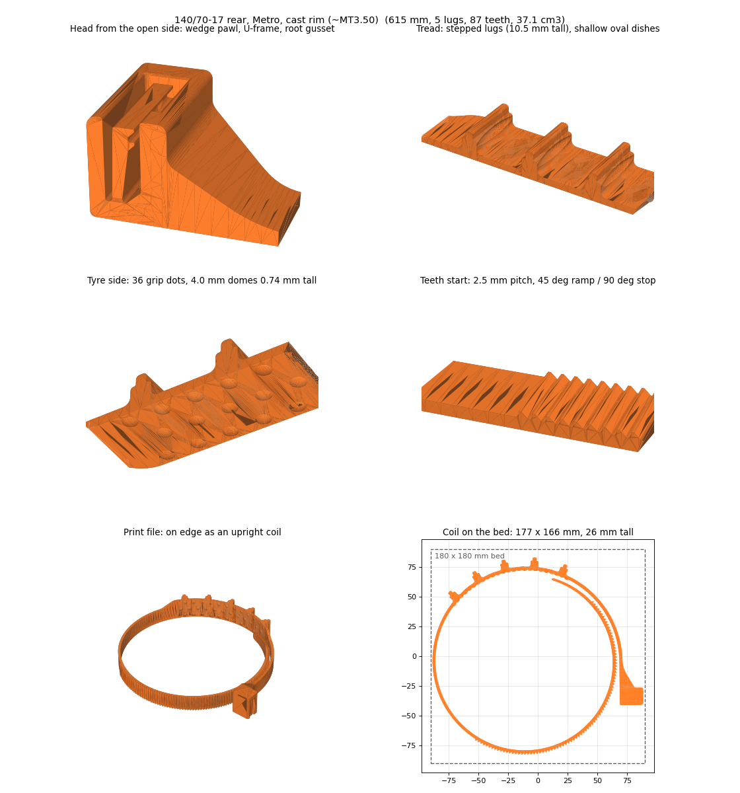
The lock has two pawl teeth that share the pull. Each overlaps the pawl by 0.75 mm over a 14.5 mm width (10.9 mm² bearing face).
| Loop tension | Per tooth | Bearing pressure | Root shear | Fillet peak (FEM, scaled) | Strap core tension |
|---|---|---|---|---|---|
| 100 N | 50 N | 4.6 MPa | 2.0 MPa | 13 MPa | 2.8 MPa |
| 200 N | 100 N | 9.2 MPa | 4.1 MPa | 26 MPa | 5.6 MPa |
| 300 N (rating) | 150 N | 13.8 MPa | 6.1 MPa | 39 MPa | 8.3 MPa |
PA12 tensile strength is about 45 MPa, so the tooth-root fillet at 39 MPa sets the rating of about 300 N per strap. If one tooth takes the whole load, bearing pressure doubles to 27.6 MPa and the local fillet peak reaches about 87 MPa, so that tooth yields and passes the load to the other. Bearing and shear are force ÷ area; the fillet peak is the CalculiX result at 300 N, scaled with load.
Engine torque does not set the load on snow, because the tyre slips first. The traction limit does: force = μ × rear wheel load, with μ = 0.35 for packed snow and 0.15 for ice, the rear wheel carrying 55 % of bike plus a 75 kg rider.
| Model | cc | Engine torque | Kerb weight | Rear tyre | Wheel torque at snow limit | Loop tension, 1 strap carries all | Loop tension, 2 straps share | Wheel torque at ice limit | Wheel torque a 300 N lock holds (1 / 2 straps) |
|---|---|---|---|---|---|---|---|---|---|
| Hunter 350 Retro | 349 | 27 Nm | 177 kg | 120/80-17 | 144 Nm | 264 N | 132 N | 62 Nm | 163 / 327 Nm |
| Hunter 350 Metro | 349 | 27 Nm | 181 kg | 140/70-17 | 147 Nm | 269 N | 134 N | 63 Nm | 164 / 329 Nm |
| Meteor 350 | 349 | 27 Nm | 191 kg | 140/70-17 | 153 Nm | 279 N | 140 N | 66 Nm | 164 / 329 Nm |
| Classic 350 | 349 | 27 Nm | 195 kg | 120/80-18 | 161 Nm | 283 N | 142 N | 69 Nm | 170 / 340 Nm |
| Himalayan 450 | 452 | 40 Nm | 196 kg | 140/80-17 | 163 Nm | 284 N | 142 N | 70 Nm | 172 / 344 Nm |
| Continental GT 650 | 648 | 52.3 Nm | 202 kg | 130/70-18 | 162 Nm | 291 N | 145 N | 69 Nm | 167 / 335 Nm |
| Interceptor 650 | 648 | 52 Nm | 213 kg | 130/70-18 | 169 Nm | 302 N | 151 N | 72 Nm | 167 / 335 Nm |
| Super Meteor 650 | 648 | 52.3 Nm | 241 kg | 150/80-16 | 187 Nm | 332 N | 166 N | 80 Nm | 169 / 339 Nm |
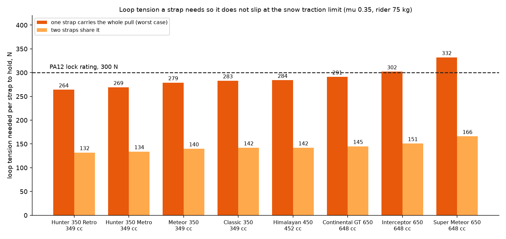
Presets exist for the Hunter 350 Metro and Retro. The other models show the load only; add their tyre to the CAD script to build a strap for them. The friction values, wrap angle (4.5 rad) and weight split are assumptions, so treat the figures as rough, not as safe limits. They are static loads; bumps and hard braking add short peaks.
Plate files for a Markforged X7 printing Onyx. Each plate holds five straps of one tyre size, or six test pieces, already on edge and spaced at least 3.8 mm apart.
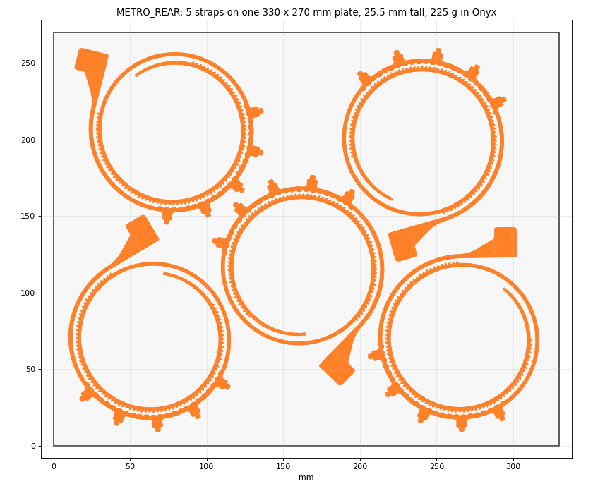
| Plate | Straps | Footprint | Tightest turn | Core bend strain |
|---|---|---|---|---|
| Metro front | 5 | 287 × 250 mm | 44.0 mm | 2.73 % |
| Metro rear | 5 | 307 × 251 mm | 43.4 mm | 2.76 % |
| Retro front | 5 | 300 × 249 mm | 47.1 mm | 2.55 % |
| Retro rear | 5 | 299 × 250 mm | 44.7 mm | 2.68 % |
| Coupon (test pieces) | 6 | 249 × 70 mm | straight | none |
_LITE plates use about 8 % less Onyx (a Metro rear strap is about 41 g instead of 44 g) with the lock unchanged: tunnels through the cleats and a 10 mm strap where it never enters the head. Files are in out/lite/plates.For long rides from a freezing winter morning to a hot summer road, use unfilled PA12 nylon.
| Rank | Material | Why |
|---|---|---|
| 1 | PA12 nylon filament, dried, printed on edge | Stays tough in the cold. Takes up very little moisture, so strength and stiffness stay close to constant from damp winter to dry summer. Keeps its shape at road-warm temperatures. The strength figures above are for this material. |
| 1 | SLS / MJF PA12 from a print service | The same material with no layer lines or warping. The most consistent result, best if you want several straps that behave alike. |
| 2 | PA6/66 copolymer nylon | Easy to print and tough, but absorbs more moisture, so it is softer and weaker when damp. |
| 3 | PA6 nylon | Highest strength when bone-dry, but swings the most with humidity. In published tests, conditioned PA6 kept only 56 % of its dry strength, against about 15 % lost for PA12. |
| 2 | Onyx (Markforged, carbon-filled nylon) | Stiffer than PA12 with lower tensile strength (about 35–40 MPa), so expect about 250 N per strap instead of 300 N. Unlike carbon-nylon filaments it is reported to stretch far before breaking, which should cope with the 2.7 % pawl strain. It is a nylon, so keep it dry. Not tested here: pull-test the coupon first. See the print plates above. |
| Avoid | Carbon- or glass-filled nylon filament | Stiffer, but stretches very little before cracking. The pawl bends 2.7 % every time a tooth clicks past, and the teeth have small root fillets. |
| Avoid | PLA, PETG, ABS, PC | PLA and PETG crack in the cold, and PLA softens in a hot car or garage. ABS and PC are brittle at notches. |
| Avoid | TPU | Too soft to hold the lock. |
One preset per Hunter 350 tyre, taken from the CAD script. Each is sized so the cleats sit on the crown and the lock lands on the teeth even if your loop is 10 % off.
| Metro rear (140/70-17) | 615 mm long, 5 cleats |
|---|---|
| Metro front (110/70-17) | 525 mm long, 4 lower cleats |
| Retro / Factory, Base Premium rear (120/80-17) | 550 mm long, 5 cleats |
| Retro / Factory, Base Premium front (100/80-17) | 490 mm long, 4 lower cleats |
| Tread band | 22 mm wide, 2.5 mm thick between the cleats |
| Cleats | Stepped (6 × 5 mm, then 3 × 3 mm), 10.5 mm above the tyre (front 9 mm), 2 mm base fillets |
| Ratchet teeth | 2.5 mm pitch, 1.2 mm tall, 45° ramp, 90° stop face, 0.4 mm root fillets |
| Head | 19.7 mm tall, 3.6 mm floor, two-tooth wedge pawl propped by the strap under load, 0.5 mm clearances |
| Printing | On edge as an upright coil, about 178 × 166 mm, 25.5 mm tall; or five per plate on a 330 × 270 mm bed (Markforged X7, Onyx) |
| Rated strap tension | About 300 N in PA12, from a CalculiX FEM check (not a load test) |
| Best material | Unfilled PA12 nylon, dried (FDM), or SLS/MJF PA12. Onyx on a Markforged X7 is the other option (about 250 N, untested). See the filament section above. |
| Print plates | out/plates (round lugs) · out/rect/plates (square lugs) |
| Files | Metro rear STL · Metro front STL · Metro rear installed pose |
| Loads by model | Tooth pressure and wheel torque for the 350, 450 and 650 Royal Enfields |
| Guide | Printing, fitting and riding guide |